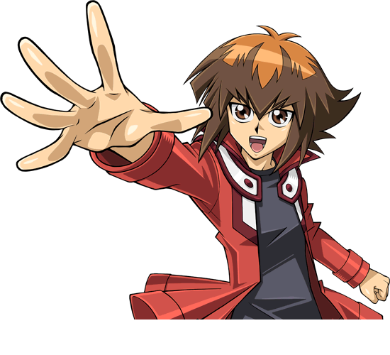

Jaden Yuki
Jaden is ready to get his game on at the premier Dueling school in the world - Duel Academy! But his less-than-stellar grades place him in Slifer Red, the lowest-ranked dorm. Still, that won't discourage him from using his super sweet Dueling instincts and his Elemental HERO Deck to make the grade. His go-to monster, Elemental HERO Neos, enhances his Fusion skills - but what sets him further apart is his ability to speak with the spirits that live inside his cards. Character Unlock Missions appear at Stage 8 (DM).
